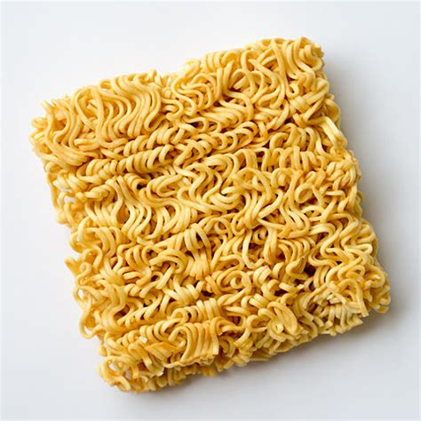

Home
Instant Noodles

Description
One of the easiest meals possible to make. Perfect for broke students.
Recipe made for one portion, adapt ingredients if more portions are needed.
Ingredients
- 1 Glass bowl and plate that can cover it
- 1 Square of instant noodles
- Water
Steps
- Open the Square of instant noodles and place them in the bowl. You may crush the noodles to make it easier to eat with a spoon.
- Open any accompanying spice and oil packs and add them to the bowl.
- Boil approximately 1L of water (exact amount varies on bowl and noodle square size).
- Fill the bowl with boiling water and cover with a plate.
- Wait until no noodles are floating anymore, at which point they are ready to eat.